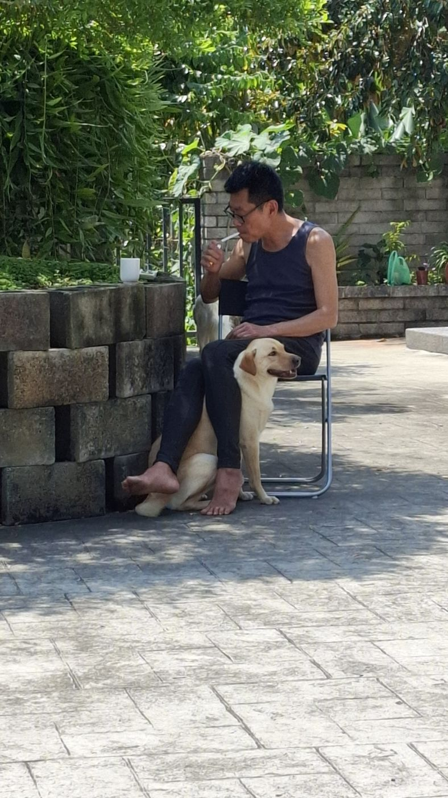

Zhi-Qing Liang
Künstlerbiografie
Zhi-Qing Liang wurde 1964 in Yuanli, Miaoli, Taiwan, geboren und arbeitet in seinem Atelier in Yuanli. Früherer Name: „Liang Gao-Kui“ (wird noch bestätigt).
Früh arbeitete er in Taipeh im Theater und in der Unterhaltungsbranche an Bühnenbild und Bauleitung; nach vielen Jahren kehrte er nach Yuanli zurück und widmet sich seither ganz dem Schaffen (Jahr der Rückkehr wird noch bestätigt). In den 1990er-Jahren zeigte er abstrakte Arbeiten unter dem Namen „Liang Gao-Kui“ (wird noch bestätigt), seit 2004 unter dem Namen „Zhi-Qing Liang“. 2010 erschien sein Buch „Existenz“.
Realismus und Abstraktion – beide Wege geht er zugleich: auf der einen Seite Bananenblätter, Kampferbäume, Lilien und alte Bäume, auf der anderen Linie, Punkt, Licht und Fließen.Radio Taiwan International (Rti)beschreibt ihn als einen der ganz wenigen Künstler Taiwans, die abstrakte und realistische Malerei nebeneinander betreiben.



In seinen Worten
In der heutigen Zeit der Hektik und Informationsflut ist alles, womit wir in Berührung kommen – Texte, Bilder, Nachrichten –, „Wissen“ und nicht „Gefühl“.Business Today 2018 (Werbebeitrag, Wortlaut wird noch bestätigt)
Im Sommer hier ein Bier zu trinken – das ist schlicht der größte Genuss im Leben!Business Today 2018 (Werbebeitrag, Wortlaut wird noch bestätigt)
Einzelausstellungen
| 1995 | Psyche und Eros | State Exhibition Space · Fei Guandian (Taichung) |
| 1998 | Innenansicht 98 | Eslite Ximen (Taipeh) |
| 1998 | Innenansicht 98 | Art Center of Yuanli (Miaoli) |
| 1999 | Zustand des Herzens 99 | Ke-Yuan Gallery (Taichung) |
| 2009 | Im Gehen | Jin-Zhi Gallery (Yuanli, Miaoli) |
| 2010 | Fließen | Ke-Yuan Gallery (Taichung) |
| 2012 | Blume – Form und Farbe | Fei Gallery (Taipeh) |
| 2012 | Tausendjähriger Glanz | Art Taipei, Fei Gallery (Taipeh) (Jahr wird noch bestätigt) |
| 2018 | Guang Bian | Shuise Art Studio (Tainan) |
| 2024 | Abiogenese – Aquarellausstellung und Vortrag | Yuanli, Miaoli |
Neu aufgefundene Einzelausstellungen, noch nicht im Lebenslauf aufgeführt (wird noch bestätigt, ob sie aufgenommen werden)
| 2017 | Südwind im Sommer | YAMI ART SPACE (Taichung) (Eröffnungsdatum wird noch bestätigt) |
| 2019 | Kunstausstellung „Guang Bian“ | Liya Xinglü (Chiayi) |
Gruppenausstellungen
| 1996 | Psyche und Eros – Ausstellung junger Künstler | Eslite Gallery Dunnan (Taipeh) |
| 2001 | Formosa – Zeitgenössischer Realismus | Ke-Yuan Gallery (Taichung) |
| 2001 | Aura der Jahrtausendwende – Vier Sätze abstrakter Natur | Hong-Gah Museum (Taipeh) |
| 2004 | Psyche und Eros | Kunstzentrum der National Cheng Kung University (Tainan) |
| 2005 | Zeit und Erinnerung | Kunstzentrum der National Cheng Kung University (Tainan) |
| 2006 | Grashalme – Zeitgenössische Arbeiten auf Papier | Ke-Yuan Gallery (Taichung) |
| 2006 | Art Taipei | Arthis Fine Art (Taipeh) |
| 2006 | Zeitgenössische Malerei – Gruppenausstellung | Arthis Fine Art (Taichung) |
| 2010 | Landschaft im Wandel | Yuehu Art Museum (Shanghai) |
| 2010 | Das andere Buch | Guidian Art Center (Beijing) |
| 2010 | Liji | Shijie Gallery (Taichung) |
| 2014 | Ausstellung „Gut leben“ | Shijie Gallery (Taichung) |
| 2015 | Liji | Shijie Gallery (Taichung) |
| 2017 | Maiflut | 80 Art Space (Tainan) |
Vorträge
| 1999 | Über das Schöne | Ke-Yuan Gallery (Taichung) |
| 2000 | Kunst und Leben | Lions Club (Taichung) |
| 2008 | Ästhetik und Leben | Fachbereich Werbung, Taichung Institute of Technology |
| 2009 | Schönheit im Alltag erkennen | Dosha, Flagship-Store Taichung |
| 2010 | Braucht das Leben die Suche nach Sinn? | Eslite Xinyi (Taipeh) |
| 2011 | Über das Thema Schönheit | Rotary Club (Taipeh) |
| 2024 | Über die Sache mit der Malerei (zwei Vorträge, Aquarellausstellung der Serie Abiogenese) | Yuanli, Miaoli |
Bücher und Auktionen
| 2010 | „Existenz“, Preaudience Press |
| 2020 | Poly Auction Hongkong, Moderne und zeitgenössische Kunst:„Magenta-Lilie“, „Im Gehen Nr. 36“ |